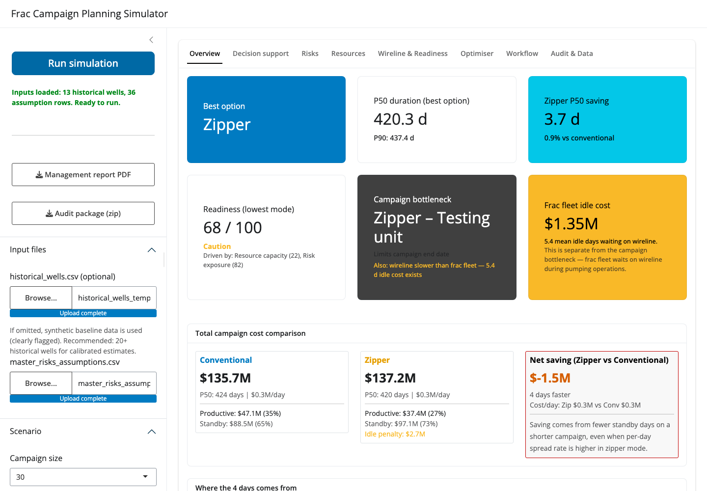
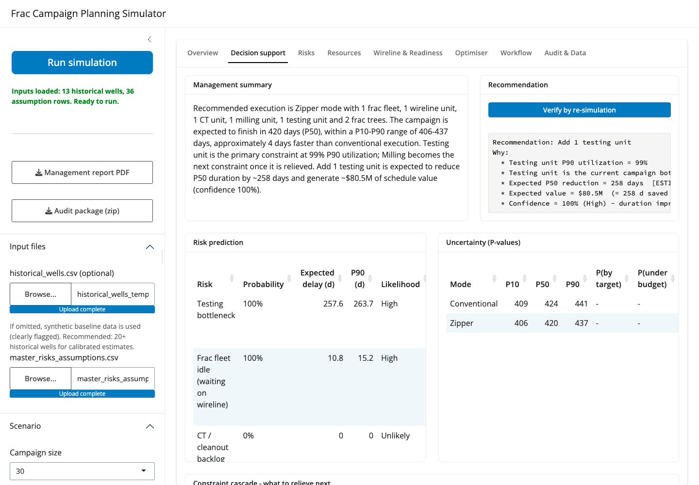
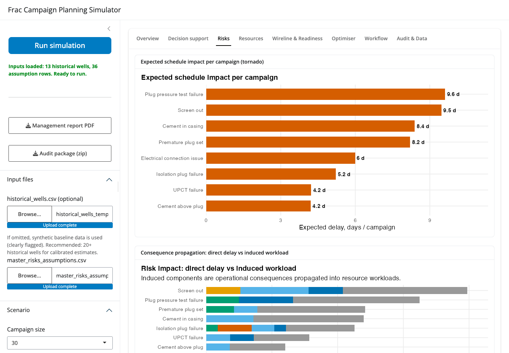
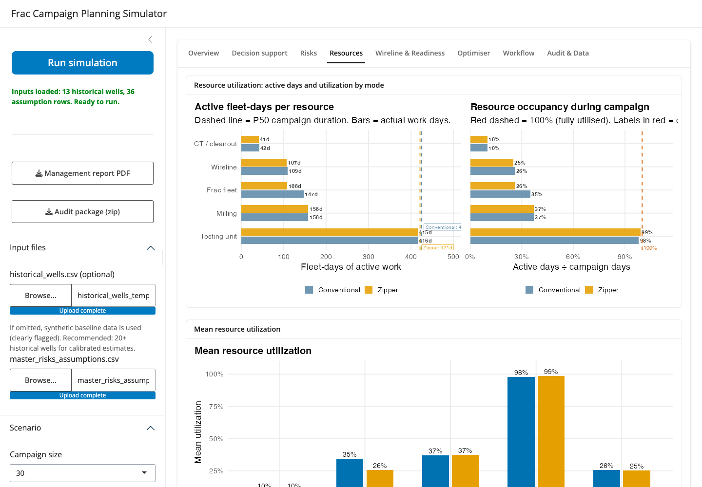
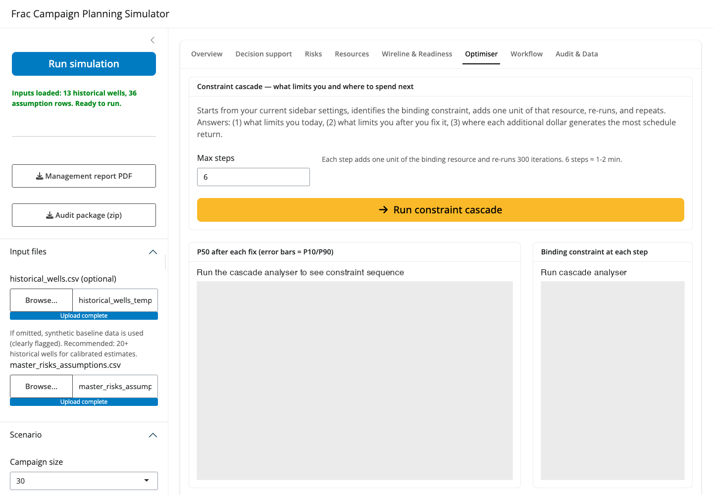
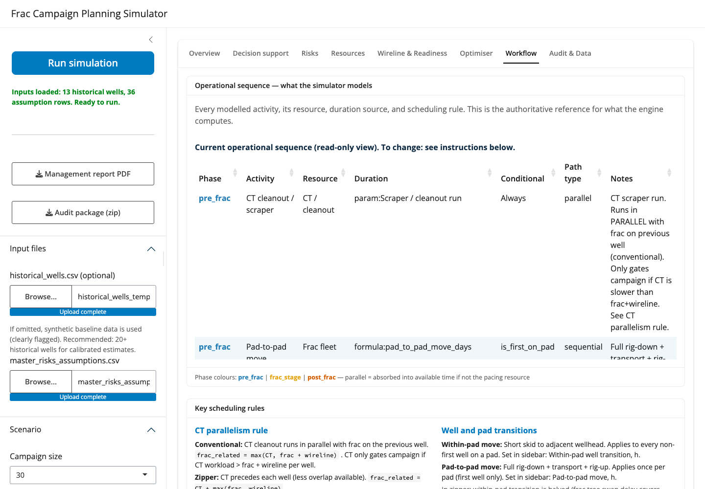

Frac Campaign Planning Simulator
A Shiny application for planning and evaluating multi-pad hydraulic fracturing campaigns using Monte Carlo simulation, operational risk modelling with consequence propagation, resource-constrained discrete scheduling, and scenario optimisation.
The simulator is designed for completion engineers, project managers, and operations teams who need to estimate campaign duration, assess uncertainty, evaluate zipper frac strategies, quantify the impact of additional resources, and identify the most cost-effective execution configuration before field operations begin.
The user does not need to edit R code. The application reads CSV input files, runs simulations, generates audit trails, and exports executive planning reports.
Project Overview
Frac campaigns are complex operations involving multiple wells, multiple pads, shared resources, operational uncertainty, and competing schedules.
Traditional planning approaches often rely on deterministic durations and engineering judgment, making it difficult to quantify schedule uncertainty or evaluate alternative execution strategies.
This project provides a data-driven framework for:
- Campaign duration forecasting (P10 / P50 / P90)
- Operational risk assessment with consequence propagation
- Resource planning and bottleneck detection
- Zipper frac evaluation, including frac tree constraints
- Campaign acceleration and investment ranking
- Constraint cascade analysis (sequential bottleneck resolution)
- Automated optimum-scenario search (Pareto frontier)
- Probability of meeting a target completion date or staying within a budget ceiling
- Traceable, re-simulation-verified recommendations with an auto-generated management narrative
- Decision support before execution
Main Features
Campaign Planning
- Conventional and zipper frac simulation, side-by-side comparison with a common seed
- Multi-pad campaigns, 20 to 40 wells, randomised pad allocation and stage counts
- Frac tree constraint modelling (swap delays with 2 trees, diminishing benefit at 3 and 4+)
- Execution modes: Fast (300 runs), Standard (1,000), Audit (2,000 with full traceability)
Resource Modelling — Five Distinct Resources
The model tracks five resources independently. Each has its own unit count, workload calculation, utilization metric, and bottleneck detection:
| Resource | Sidebar label | What it represents | Primary activities |
|---|---|---|---|
| Frac fleet | Frac fleets | Pumping spread (blenders, pump trucks, treating iron) | Stage execution, pressure testing |
| Wireline | Wireline units | Wireline unit (truck, depth control, toolstring) | Perforation, plug setting, temperature logs |
| CT / cleanout | CT / cleanout units | Light coiled tubing unit for well intervention | Pre-frac cleanout runs, SCMT support, screenout response, premature plug remediation |
| Milling | Milling units | Dedicated plug-milling spread (PDM motor + mill BHA) | Post-frac plug drill-out |
| Testing unit | Testing units | Wellhead flowback and well test equipment | Post-milling flowback, pressure build-up test |
CT / cleanout vs Milling — these are different units. The “CT / cleanout” resource is the light well intervention CT string used for pre-frac wellbore cleanup and risk interventions (screenout clean-up, premature plug response). It is not the drill-out spread. Milling (plug drill-out) is a separate resource using a PDM motor and mill BHA on a dedicated workstring or CT milling unit. If your operation uses the same CT string for both cleanout and milling, model this using the “Allow CT units to support milling” option in the sidebar, which transfers spare CT capacity to the milling workload at a configurable efficiency (default 0.65).
Risk Modelling
- Full plug-and-perf risk library: plug pressure test failure, screenout, premature plug set, perforation misfire, UPCT failure, cement in casing, cement above plug, isolation plug failure, plus resource and external risks
- Risk scope calibration: risks are classified as
stage(probability per stage, e.g. screenout),well(per well independently), orcampaign(single event for whole campaign, e.g. crew unavailability). This prevents the common error of treating crew absences as 30 independent per-well events - Consequence propagation: each technical risk cascades into induced workload (wireline re-runs, CT interventions, extra milling plugs, testing interventions, extra pumping) rather than a direct delay only
- All consequence values overridable per-risk from the assumptions CSV
Decision Support
- Executive KPI dashboard with readiness score and its drivers
- Decision support tab — a single consolidated view for go/no-go decisions:
- Management summary: an auto-generated narrative paragraph stitching together the recommendation, the current bottleneck, and the risk/uncertainty outlook into one management-readable statement
- Recommendation panel: an evidence-based “why” panel for the top resource addition (current utilization, bottleneck status, days saved, incremental cost, ROI), with a “Verify by re-simulation” button that re-runs the simulation to confirm the instant analytic estimate
- Risk prediction table: per-risk probability of occurrence, expected delay, P90 delay, and likelihood/impact rating, optionally evaluated against a target completion date
- Uncertainty table: P10/P50/P90 by mode plus probability of finishing by a target date, probability of staying within a budget ceiling, probability of resource overload, and P50 cost
- Constraint-relief cascade: ranked list of which resource to relieve next and the cumulative days each successive fix recovers
- Investment ranking: net benefit and ROI (days per $1M) of each proposed resource addition
- Constraint cascade analyser (Optimiser tab): greedy sequential bottleneck resolution — answers what limits you now, what limits you after you fix it, and where each additional dollar generates the most schedule return, with a waterfall chart of P50 duration after each fix
- Scenario optimiser: grid search over resource configurations, common-random-number screening, Pareto frontier of duration vs total mobilisation cost, one-click apply of the recommended scenario
- Optional target duration and budget ceiling sidebar inputs feed the risk prediction and uncertainty tables above
Audit and Reporting
- Executive PDF report (landscape, KPI dashboard, charts, styled tables, deployment timeline), with a prepended Executive Decision Summary page (management narrative, recommendation, bottleneck evidence, risk/uncertainty outlook)
- Well-level audit trail, risk event log with consequence columns, assumptions-used table
- Downloadable audit package (zip) with 18+ CSV exports
- Input fidelity check: simulated vs historical distributions
Screenshots
Overview — KPI dashboard

Decision support — narrative, recommendation, risk and uncertainty

Risks — tornado and consequence propagation

Resources — utilization and deployment

Optimiser — constraint cascade and Pareto search

Workflow — operational sequence viewer

Operational Logic
This section documents the modelled equipment relationships and operation sequence so the logic can be verified against, and adapted to, your own operations.
Equipment Relationship Map
Key dependencies as modelled:
- Wireline gates frac. A stage cannot pump until wireline has perforated and set the plug. In zipper mode, if wireline workload per well exceeds frac workload per well, the frac fleet waits (
wireline_readiness_delay_days) and the idle cost is reported. - CT cleanout runs in parallel with frac (conventional). CT preps well N+1 during well N’s frac execution. CT only gates the campaign if it becomes the pacing resource (i.e. CT workload per well > frac+wireline workload per well). See Conventional Frac Execution Logic below.
- SCMT runs offline when a spare wireline unit exists. If
wireline_units >= 2, SCMT is always run offline (spare unit available for cement evaluation while primary unit perforates). With a single wireline unit, SCMT offline probability is set in the assumptions CSV (default 80%). - Frac trees gate zipper. Zipper requires 2 trees minimum. With exactly 2, each inter-well transition incurs a swap delay; a 3rd tree reduces transition waiting (~5%), 4+ slightly more (~10%, diminishing).
- Milling follows frac and is scheduled discretely. Milling cannot start until a well is fully fraced AND a milling unit AND testing unit are both free. Wells are scheduled in frac-release order; later wells can begin milling while earlier wells are still in flowback.
- CT / cleanout is separate from milling. CT cleanout is pre-frac well intervention. Milling is post-frac plug drill-out on a dedicated milling spread. These are tracked as separate resources with separate utilization. Use “Allow CT to support milling” only if your CT unit genuinely does plug drill-outs.
- Testing follows milling per well. Each well’s flowback + testing window starts when its milling completes AND a testing unit is free. The testing unit holds the resource during both milling (test confirmation) and flowback (pressure monitoring).
Conventional Frac Execution Logic
CAMPAIGN PACING: Sequential well-by-well. One frac fleet, one wireline unit.
For each well (N = 1 to 30):
─────────────────────────────────────────────────────────────────────────
PRE-FRAC (CT / cleanout — runs in parallel with previous well's frac):
CT cleanout / scraper run ~0.5 d (from assumptions CSV)
SCMT cement evaluation ~1.0 d (if running online; else 0)
Note: CT preps well N during well N-1's frac execution.
CT only delays campaign if ct_workload > (frac + wireline) per well.
FRAC STAGE LOOP (per stage, wireline then frac, sequential):
Wireline: perforate stage N time/stage (sidebar)
Wireline: set isolation plug isolation plug duration (CSV)
[Optional: temperature log] if this stage is a log stage
Frac fleet: pump stage N frac_time_per_stage (sidebar)
Settling time settling hours (sidebar)
→ Repeat for all stages
POST-FRAC (milling + testing — run in parallel with ongoing frac on other wells):
Milling unit: drill out plugs plugs × milling_days_per_plug (historical)
Testing unit: occupied during milling (resource held, not additional time)
Testing unit: flowback + well test 7–10 days (configurable, per well)
─────────────────────────────────────────────────────────────────────────
CAMPAIGN DURATION:
Frac path = Σ max(ct_per_well, frac_per_well + wireline_per_well) over all wells
Post-frac = discrete scheduler: wells flow into milling/testing queue
as they are released; last well's flowback_finish = campaign end
Campaign = max(frac_path, post_frac_completion_day)
WHAT THIS MEANS IN PRACTICE:
With typical values (frac 12h/stage, wireline 6h/stage, 6 stages/well):
frac+wireline ≈ 4.5 d/well > ct_workload ≈ 1.6 d/well
→ CT completes within frac window; does NOT add to campaign time
→ Campaign paced by (frac + wireline) sequential path ≈ 4.5 d/well × 30 = 135 d
Post-frac queue (milling + testing) runs concurrently; with 3+ testing units
it clears before or alongside the frac path.Zipper Frac Execution Logic
CAMPAIGN PACING: Alternating wells on two simultaneous fracs.
Requires: ≥ 2 frac trees, ≥ 2 wells on pad (or adjacent pads).
For each pair of wells (A, B alternating):
─────────────────────────────────────────────────────────────────────────
PRE-FRAC (overlapped — both wells prepped before first stage):
CT cleanout: Well A ~0.5 d
CT cleanout: Well B ~0.5 d (CT moves after Well A)
SCMT: well A + B (if online)
Wireline: perforate Well A Stage 1
FRAC STAGE LOOP (alternating wells):
┌────────────────────────────────────────────────────────────┐
│ Well A: FRAC Stage N While: Wireline preps B │
│ Well B: FRAC Stage N While: Wireline preps A │
│ → Frac fleet moves A → B → A, wireline stays 1 stage ahead│
└────────────────────────────────────────────────────────────┘
Frac fleet idle if wireline not ready → wireline_readiness_delay_days
Tree swap: each A→B transition incurs swap_delay
2 trees: full swap delay (sidebar: frac_tree_swap_delay_hours, default 4h)
3 trees: 5% reduction in effective execution time
4+ trees: 10% reduction (diminishing)
Zipper execution factor applied to frac workload (default 0.75)
→ frac_execution = base_frac × 0.75 (25% faster than conventional)
─────────────────────────────────────────────────────────────────────────
CAMPAIGN DURATION:
Per well: frac_related = ct_fleet_days + max(frac_fleet_days, wireline_fleet_days)
(wireline and frac run in parallel; whichever is slower governs)
Frac path = Σ frac_related over all wells
Post-frac = same discrete scheduler as conventional
Campaign = max(frac_path, post_frac_completion_day)
WHY ZIPPER IS FASTER:
Conventional per well: frac + wireline in sequence ≈ 4.5 d
Zipper per well: max(frac × 0.75, wireline) ≈ max(3.4, 3.6) ≈ 3.6 d
Campaign saving: (4.5 - 3.6) × 30 = ~27 d (frac path alone)
Additional saving: post-frac queue shorter because wells release earlier
Total P50 saving: typically 60–120 days for a 30-well campaign
WIRELINE CONSTRAINT:
If wireline_days_per_well > frac_days_per_well × 0.75:
Frac fleet waits on wireline → idle cost reported
If wireline_days_per_well < frac_days_per_well × 0.75:
Wireline waits between wells → no frac idle cost
FRAC TREE CONSTRAINT:
2 trees: every A→B transition costs swap_delay_hours ÷ 24 per well
3 trees: spare tree pre-positioned; swap delay reduced ~5%
4+ trees: further reduction ~10% (diminishing returns)Risk Consequence Propagation
Risks do not just add delay days. Each technical risk cascades into induced resource workload:
Default consequence library (per occurred event, overridable per-risk via CSV):
| Risk event | Scope | Wireline runs | CT days | Milling plugs | Testing days | Pump days |
|---|---|---|---|---|---|---|
| Screenout | stage | 1 | 0.50 | - | - | 0.25 (+ extra stage) |
| Plug pressure test failure | stage | 1 | - | - | 0.15 (+ plug) | - |
| Premature plug set | stage | - | 0.25 | - | 0.30 | - |
| Perforation / gun misfire | stage | 1 | - | - | - | - |
| Isolation plug failure | stage | 1 | 0.50 | 1 | 0.25 | - |
| UPCT failure | stage | 1 | 0.25 | - | - | - |
| Cement in casing | stage | - | 1.00 | - | - | - |
| Cement above plug | stage | - | 0.50 | - | - | - |
| Wireline crew unavailable | campaign | - | - | - | - | - |
| CT unit unavailable | campaign | - | - | - | - | - |
| Weather / permit / access | campaign | - | - | - | - | - |
Risk scope controls how probability is applied: - stage: probability per stage. Effective per-well probability = 1 - (1-p)^N_stages. Use for events that can occur on any individual stage (screenout, gun misfire). - well: independent probability per well. Use for well-level events (surface equipment failure). - campaign: single Bernoulli draw for the whole campaign. Use for crew absences, weather, permits — events that affect the whole operation, not each well independently. This prevents the structural error of treating a crew walkout as 30 independent per-well events.
Campaign Duration Formula
─── PER WELL ──────────────────────────────────────────────────────────────
wireline_workload = stages × time/stage
+ wireline rig up/down
+ temperature log days
+ wireline contingency %
+ risk delays (wireline-class)
+ induced re-runs from consequences
frac_workload = (stages × frac_time/stage
+ frac settling time
+ isolation plug duration
+ risk delays (frac-class + external)
+ induced pumping from consequences
+ frac tree swap delays)
× zipper_efficiency_factor
ct_workload = cleanout duration
+ SCMT duration (if running online; 0 if offline)
+ risk delays (CT-class)
+ induced CT interventions from consequences
milling_workload = plugs × milling_days_per_plug
+ extra plugs from risk consequences
flowback_testing = uniform(flowback_min, flowback_max) days
+ induced testing days from consequences
─── PASS 1: FRAC PATH ─────────────────────────────────────────────────────
Conventional:
frac_related_per_well = max(ct_workload, frac_workload + wireline_workload)
[CT runs in parallel with frac on adjacent well; only gates campaign if CT
is the pacing resource]
Zipper:
frac_related_per_well = ct_workload + max(frac_workload, wireline_workload)
[CT precedes each well; frac and wireline overlap across alternating wells]
frac_path_days = Σ frac_related_per_well over all wells
─── PASS 2: CT SPARE CAPACITY FOR MILLING (optional) ──────────────────────
total_ct_capacity = frac_path_days × ct_units
ct_available_capacity = max(total_ct_capacity - total_ct_primary_workload, 0)
ct_milling_support = min(milling_demand, ct_available × efficiency)
adjusted_milling = milling_demand - ct_milling_support
─── POST-FRAC DISCRETE SCHEDULER ─────────────────────────────────────────
Wells released from frac in campaign order (earliest first).
For each released well, allocate first available (milling_unit, testing_unit) pair.
Testing unit is held during both milling and flowback phases.
post_frac_completion = max(flowback_finish across all 30 wells)
─── CAMPAIGN DURATION ─────────────────────────────────────────────────────
campaign_days = max(frac_path_days, post_frac_completion)Adapting the Model to Your Operations
| Your operation differs in… | Adjust… | Where |
|---|---|---|
| Stage cycle times | Frac time per stage, wireline time per stage, settling time | Sidebar > Operation timing |
| No SCMT or scraper run | Set duration rows to 0 in assumptions CSV | master_risks_assumptions.csv |
| SCMT always offline | Set SCMT offline probability to 1.0 | master_risks_assumptions.csv |
| CT and milling are the same unit | Enable “Allow CT to support milling”, set CT milling efficiency (0.65 default) | Sidebar > Resources |
| Different milling rate | Supply actual MillingDaysPerPlug values | historical_wells.csv |
| Risk likelihoods and delays | Probability / Min / ML / Max per risk | master_risks_assumptions.csv |
| Risk scope (per-stage vs per-well vs campaign-wide) | Scope column in assumptions CSV | master_risks_assumptions.csv |
| Risk operational consequences | Add consequence override columns | master_risks_assumptions.csv |
| Flowback duration | Flowback + testing min/max days | Sidebar > Resources |
| Tree swap handling | Frac tree swap delay hours; frac trees available | Sidebar > Resources |
| Different operation sequence | See Workflow tab in the app | Workflow tab |
| New resource type | Code change required: add to resource vectors and workload formula | simulation_engine.R |
Architecture
Historical Wells CSV Assumptions + Risk CSV workflow_config.csv (opt.)
│ │ │
└──────────┬────────────┘──────────────────────────┘
▼
Input Validation (row-level diagnostics, scope check)
▼
Monte Carlo Simulation Engine
│ parameter cache · static risk grid (vectorised)
│ scope-aware risk probability (stage/well/campaign)
│ consequence propagation (CT/wireline/milling/testing)
│ CT cleanout parallel with frac path (conventional)
│ SCMT offline rule (wireline unit count driven)
│ two-pass CT capacity · discrete post-frac scheduler
▼
┌──────────┬─────────────┬──────────────┐
▼ ▼ ▼ ▼
Summary Well Detail Risk Event Resource
(P10/50/90) Audit Trail Log + Conseq. Utilization
└──────────┴─────────────┴──────────────┘
▼
Analytics: readiness · bottlenecks · investment ranking
consequence summary · constraint cascade
deployment timeline · Pareto optimiser
▼
Decision layer: traceable recommendations (+ verify by
re-simulation) · bottleneck explainability · risk
prediction · uncertainty (P-values) · management narrative
▼
┌──────────┬──────────┬─────────────┬──────────────┬──────────┬──────────┐
▼ ▼ ▼ ▼ ▼ ▼ ▼
Dashboard Decision Optimiser PDF Report Audit Pkg Workflow
(bslib) support (Cascade+ (executive + (zip 18+ Viewer
tab Pareto) decision page) CSV)Application Guide
| Tab | Contents |
|---|---|
| Overview | KPI value boxes (best option, P50/P90, zipper saving, readiness + drivers, bottleneck, idle cost), investment ranking, S-curve, distribution, traffic lights |
| Decision support | Management summary narrative, recommendation panel with “Verify by re-simulation”, risk prediction table, uncertainty (P-values) table, constraint-relief cascade |
| Risks | Tornado, consequence propagation (direct vs induced), top delay contributors, stage-level risks, detail tables |
| Resources | Deployment timeline (Gantt-style), utilization, bottleneck detection, recommended actions, cost impact |
| Wireline & Readiness | Stage-readiness constraint breakdown, readiness score |
| Optimiser | Constraint cascade (greedy sequential fix, ROI per step) + Pareto grid search |
| Workflow | Operational sequence viewer, instructions for adapting the model |
| Audit & Data | Input fidelity check, full results, well details, risk event log, assumptions used |
Constraint Cascade Analyser
The cascade answers three questions in order:
- What limits you today? Identifies the binding constraint (P90 utilization).
- What limits you after you fix it? Adds one unit of the binding resource, re-runs, identifies the next constraint.
- Where should I spend the next dollar? Reports days saved, incremental cost, schedule value (days saved × daily spread rate), and ROI (days per $1M invested) at each step.
Scenario Optimiser
The grid-search optimiser answers: which configuration delivers the lowest time at the lowest cost?
- Objective: total mobilisation cost = all contracted units × day rate × P50 duration.
- Method: every configuration screened at reduced iterations with a common random seed; top 5 refined at 600 iterations.
- Output: Pareto frontier of duration vs cost; recommended scenario with one-click sidebar apply.
Input Files
historical_wells.csv
Historical well performance. Required columns: WellID, PadID, StagesPlanned, StagesCompleted, PlugsInstalled, ContingencyPlugs, FracDays, SCMTDays, MillingDays, FracDaysPerStage, MillingDaysPerPlug.
Minimum 5 wells with positive FracDaysPerStage and MillingDaysPerPlug values. More wells = better calibrated distribution. See data_templates/historical_wells_template.csv.
master_risks_assumptions.csv
Assumptions and risk library. Required columns: Category, Variable / Risk Event, Type, Probability, Min Days, Most Likely Days, Max Days, Simulation Impact.
Optional columns: Scope (well/stage/campaign), extra_wireline_runs, extra_ct_days, extra_milling_plugs, extra_testing_days, extra_frac_days.
See data_templates/master_risks_assumptions_template.csv for full guidance including inline comments.
workflow_config.csv (optional)
Override the operational sequence without editing R code. Controls activity-to-resource mapping and path type (sequential vs parallel). See data_templates/workflow_config_template.csv.
Outputs
Audit package (zip): simulation_summary, simulation_well_details, simulation_risk_event_log (with consequence columns), resource_utilization, resource_utilization_summary, assumptions_used, executive_summary, executive_kpis, delay_contributors, stage_level_risks, risk_consequences, bottleneck_detection, resource_recommendations, investment_ranking, cost_impact, wireline_constraint, traffic_lights, readiness_score, resource_timeline, management_report.pdf.
Optimiser results and constraint cascade results export separately from the Optimiser tab.
Run Locally
Requirements
- R 4.3+
Install Dependencies
install.packages(c(
"shiny", "bslib",
"dplyr", "tidyr", "stringr", "tibble", "readr",
"ggplot2", "scales",
"DT", "janitor",
"gridExtra", # executive PDF report
"zip" # robust cross-platform audit package
))Launch
source("run_local.R")Roadmap
Version 1.0 — MVP Simulator (Completed)
Monte Carlo engine, historical duration extraction, risk framework, conventional + zipper simulation, resource inputs, audit package.
Version 2.0 — Operational Realism (Completed)
- Stage-level risk attribution with consequence propagation
- Risk scope calibration (stage / well / campaign)
- Frac tree constraints (swap delays, 3-tree and 4-tree bonus)
- Separate CT / cleanout and milling resources
- CT-supports-milling with discrete capacity transfer
- Testing unit with post-frac flowback discrete scheduler
- CT cleanout parallelism (conventional): CT runs in parallel with frac; only gates campaign if CT is the pacing resource
- SCMT offline rule driven by wireline unit count
- Constraint cascade analyser (greedy sequential bottleneck resolution, ROI per step)
- Scenario optimiser (Pareto frontier, common random numbers, one-click apply)
- Executive PDF report (branded landscape, KPI dashboard, deployment timeline)
- Workflow viewer and sequence documentation
- Config-driven resource classification and consequence library
- Strict numeric validation with row-level error messages
Version 2.5 — Decision Support Layer (Completed)
- Traceable recommendation engine with an evidence-based “why” panel and one-click “Verify by re-simulation”
- Bottleneck explainability: evidence chain (active work, utilization, queue-delay contribution) and a constraint-relief cascade ranked by recoverable days
- Risk prediction: per-risk probability, expected delay, and P90 delay, evaluable against a target completion date
- Uncertainty quantification: probability of finishing by a target date, staying within a budget ceiling, and resource overload risk
- Decision narrative engine generating a single management-readable summary paragraph
- New “Decision support” tab consolidating the above
- Executive decision summary page prepended to the PDF report
- Performance: bit-identical fast simulation engine and parallel scenario optimiser, keeping Standard/Audit modes and the grid-search optimiser responsive
Version 3.0 — Resource Scheduling Engine (Planned)
Discrete-event scheduling, true critical path, drilling programme integration, pad-to-pad resource movement, multi-fleet sequencing, schedule-accurate Gantt charts.
Version 4.0 — Campaign Planning Platform (Planned)
Scenario management, historical campaign backtesting (predicted vs actual), Bayesian updating of risk probabilities from observed events, portfolio-level planning.
Limitations
- Operational planning model: workload-based aggregation. The post-frac milling/testing scheduler is discrete; the frac path and pre-frac scheduling are workload-based approximations.
- Not a hydraulic fracture propagation, reservoir, or production model.
- Risk consequences are deterministic per event (library defaults); delays are triangular-sampled.
- CT spare capacity assumes uniform availability over the campaign window (no within-campaign sequencing).
- Optimiser recommendations are conditional on the daily rates entered; sensitivity-check against contract values.
- Results depend on the quality of historical data and assumptions provided.
- Greedy cascade (constraint analyser) finds a locally optimal fix sequence; global optimum is the Pareto grid search.
License
MIT License. See the LICENSE file for details.